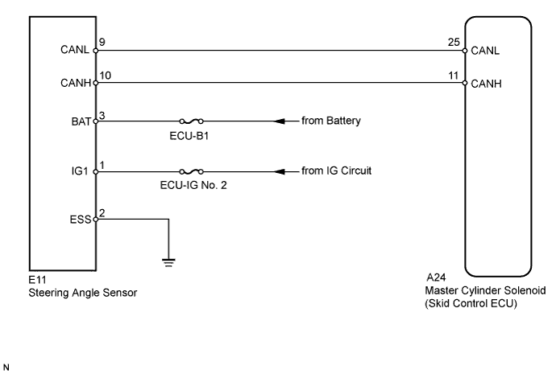
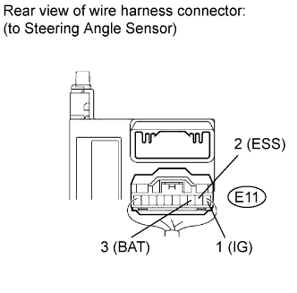

DTC C1231/31 Steering Angle Sensor Circuit Malfunction |
| DTC Code | DTC Detection Condition | Trouble Area |
| C1231/31 | When the ECU IG1 terminal voltage is 9.5 V or higher, the steering angle sensor malfunction signal is received. |
|

| 1.READ VALUE USING INTELLIGENT TESTER (STEERING ANGLE SENSOR) |
Connect the intelligent tester to the DLC3.
Turn the engine switch on (IG) and turn the intelligent tester on.
Enter the following menus: Chassis / ABS/VSC/TRC / Data List.
| Tester Display | Measurement Item/Range | Normal Condition | Diagnostic Note |
| Steering Angle Sensor | Steering angle sensor/min.: -3276.8 degrees, max.: 3276.7 degrees | Left turn: Increase Right turn: Decrease | - |
Check that the steering wheel turning angle value of the steering angle sensor displayed on the intelligent tester changes when turning the steering wheel.
|
| ||||
| OK | |
| 2.RECONFIRM DTC |
Clear the DTCs (Click here).
Drive the vehicle at a speed of approximately 10 km/h (6 mph) or more for 10 seconds or more.
Check if the same DTCs are output (Click here).
| Result | Proceed to | |
| DTC is not output | A | |
| DTC is output | LHD | B |
| RHD | C | |
|
| ||||
|
| ||||
| A | ||
| ||
| 3.CHECK HARNESS AND CONNECTOR (STEERING ANGLE SENSOR - BATTERY AND BODY GROUND) |
 |
Remove the steering wheel and the lower steering column cover.
Disconnect the E11 steering angle sensor connector.
Measure the voltage according to the value(s) in the table below.
| Tester Connection | Switch Condition | Specified Condition |
| E11-1 (IG1) - Body ground | Engine switch on (IG) | 11 to 14 V |
| E11-3 (BAT) - Body ground | Always | 11 to 14 V |
Measure the resistance according to the value(s) in the table below.
| Tester Connection | Condition | Specified Condition |
| E11-2 (ESS) - Body ground | Always | Below 1 Ω |
|
| ||||
| OK | ||
| ||